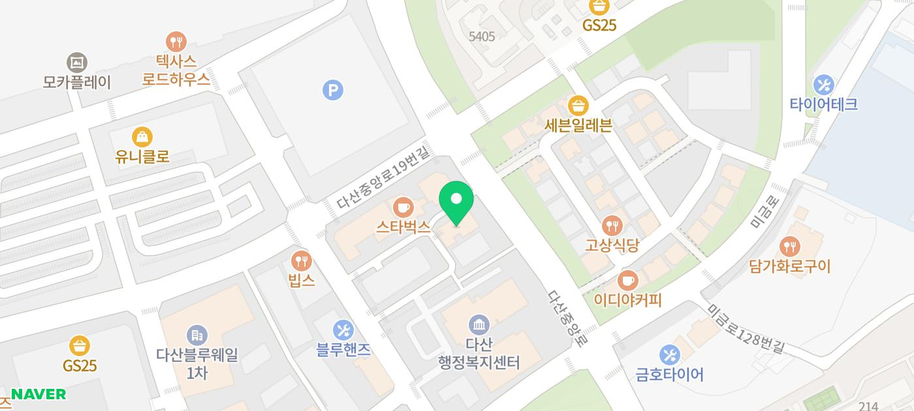

모바일에서 화면 터치 시 바로 전화연결 가능합니다.
안녕하세요.
다산 원동물의료센터 진료과장
임동환 입니다.
반려동물은 치료의 대상이 아닌,
보호자와 함께하는 소중한 가족이라고 믿습니다.
그 마음으로 한 번의 진료, 한 번의 만남에도
최선을 다하며 늘 따뜻한 손길로
곁을 지켜드리겠습니다.
📚
주요 약력
- 건국대학교 수의과대학 졸업
- 건국대학교 수의과대학 임상로테이션 수료
- 육군 수의장교 대위 전역
- 강북24시N동물의료센터 진료수의사
- 23년 서울수의컨퍼런스 참가
- 24년 서울수의컨퍼런스 참가
- 25년 서울수의컨퍼런스 참가
- 현 24시다산원동물의료센터 진료과장
"세심한 관찰과 따뜻한 동반자로서의 진료"
저는 작은 이상 신호도 놓치지 않고
보호자와 함께 해결해 나가는 것을
가장 중요하게 생각합니다.
단순한 치료가 아닌, 예방부터 생활 관리까지
함께 고민하며 반려동물의 전 생애 건강을
지켜드리겠습니다. 언제든지 편하게 상담하고
의지할 수 있는 ‘가장 가까운 주치의’가 되겠습니다.
모바일에서 화면 터치 시 바로 전화연결 가능합니다.
저희 다산 원동물의료센터는
보호자분들의 든든한 동반자가 되어,
반려동물의 평생 건강 관리를 책임지겠습니다.

#다산동물병원추천 #24시간동물병원
#도농역동물병원 #남양주동물병원 #구리동물병원
#강아지CT #고양이CT #수술잘하는동물병원
#수술전문동물병원 #수택동동물병원 #동구동동물병원